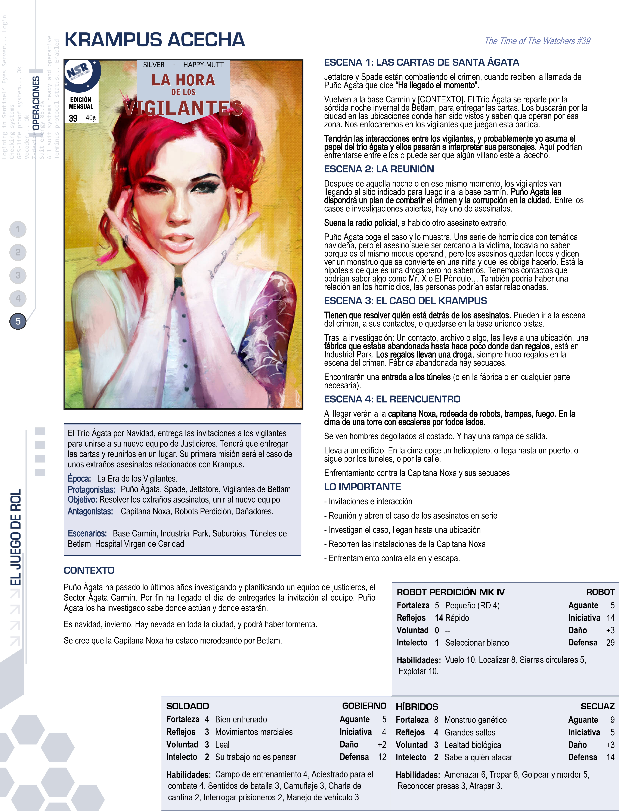
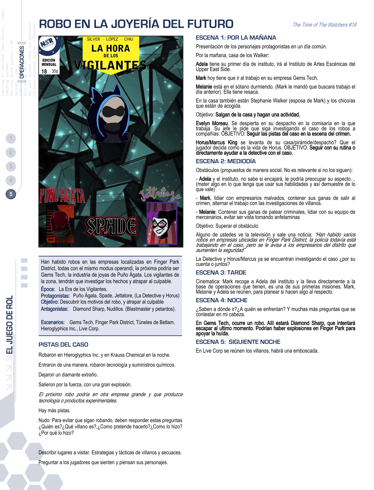
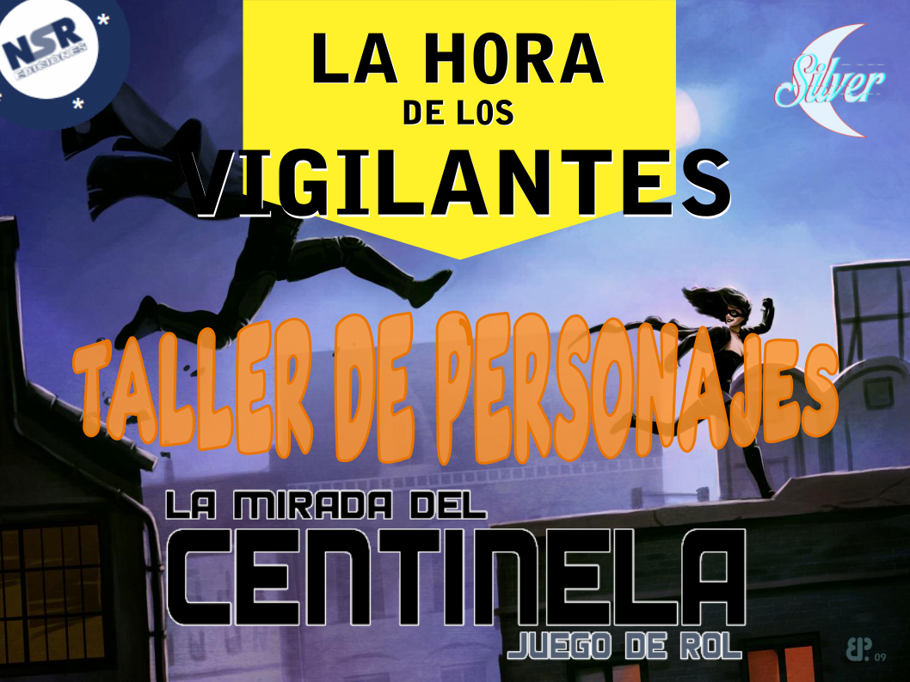

Nos situamos en una ciudad del Estado de Nueva Jersey, Betlam City, en el año 1975; en un mundo muy parecido al nuestro, pero con la diferencia de que existen personas que llevan sus capacidades al límite y se disfrazan con trajes estrafalarios para combatir el crimen o provocar el caos. Betlam es un ciudad oscura, llena de crimen y corrupción, pero hay un héroe que vela por sus ciudadanos: El Centinela. Una figura legendaria que desde principios del siglo XX ha luchado contra las fuerzas oscuras que dominan la ciudad, impidiendo que la consumieran por completo.
Pero hace un año, en 1974, tres personas corrientes deciden fabricarse un uniforme, asumir un nombre clave y salir a patrullar por las noches de Betlam. Son Polecat, Sentencia y Horus. Durante los meses siguientes, el fenómeno se extiende por Betlam, con justicieros como Puño Ágata, Spade o Red Roy.
Este fenomeno de vigilantes lleva consigo un mensaje a la sociedad Betlamita dandonles esperanza, a los criminales temor y al gobierno su impotencia corrupta. Pero nada es perfecto, los vigilantes tienen su propia manera de ver el crimen y ejecutar la justicia, igual que los villanos son distintos a los betlamitas comunes.
Cómic: The Time of Watchers #34 (dic. de 1976)
Sinopsis
Esta Navidad los vigilantes de Betlam tengan un gran regalo, la invitación a unirse a un equipo de justicieros de Santa Ágata y el trío Carmín. ¿Qué podría fastidiar estas navidades? ¡El Crimen! La villanía y corrupción no descansa ni siquiera en navidad, al igual que los justicieros de esta ciudad.
El Trío Ágata por Navidad, entrega las invitaciones a los vigilantes para unirse a su nuevo equipo de Justicieros. Tendrá que entregar las cartas y reunirlos en un lugar. Su primera misión será el caso de unos extraños asesinatos relacionados con Krampus.
¿Qué mal acechará a nuestros queridos vigilantes?
Época:
La Era de los Vigilantes
Protagonistas:
Puño Ágata, Spade, Jetattore, vigilantes de Betlam
Antagonistas:
Capitana Noxa, Robots Perdición, Dañadores, Híbridos.
Escenarios:
Base Carmín, Industrial Park, Fábrica abandonada, Túneles de Betlam.

Cómic: The Time of Watchers #18 (sept. de 1975)
Sinopsis
Han habido robos en las empresas localizadas en Finger Park District, todas con el mismo modus operandi, la próxima podría ser Gems Tech, la industria de joyas de Puño Ágata. Nuestra familia contra el crimen, Puño Ágata, Spade y Jettatore tratarán de investigar los hechos y encontrar al ladrón, antes de que suceda otra vez. Tendrán que frustar sus planes y detenerlo.
¿Podrán nuestro trío Carmín seguir las pistas?¿Quién será este extraño ladrón?¿Habrá algo más detrás? Descubrelo en este nuevo número de La Hora de los Vigilantes!
Época:
La Era de los Vigilantes
Protagonistas:
Puño Ágata, Spade, Jetattore, Horus y La Detective
Antagonistas:
Diamond Sharp, Nudillos, Blastmaster, petardos.
Escenarios:
Gems Tech, Finger Park District, Túneles de Betlam, Hieroglyphics Inc., Live Corp..

Sobre el Daño y la virtud
Cómic: The Time of Watchers #12 (feb. de 1975)
Sinopsis
El justiciero Puño Ágata recibe una invitación de la Capitana Noxa, la genio criminal y filosofa malvada. Noxa ha preparado un complejo dilema mortal en la Mina de Silverdale. Puño Ágata debe decidir a quién salvará y quién morirá. Ustedes serán civiles atrapados en este juego moral y filosófico. A partir de este suceso, se convertirán en los nuevos vigilantes de Betlam City. En este taller crearemos a vuestros justicieros (y su némesis) para la nueva campaña del Sector Ágata Carmín (SAC), el equipo fundado por Puño Ágata.
¿Podrá Puño Ágata salvar a todos, o alguien morirá? ¿La Capitana Noxa conseguirá su objetivo de corromper al héroe? ¿De dónde ha salido esta villana tan poderosa?
Época:
La Era de los Vigilantes
Protagonistas:
Puño Ágata, Spade, El Centinela (nº4), los jugadores
Antagonistas:
Capitana Noxa, Robots Perdición, criminales de poca monta, civiles inmorales.
Escenarios:
Mina de Silverdale.


La Era de los Vigilantes
Entra aquí al Taller de personajes.
Crea tu propio vigilante de Betlam
Ver más